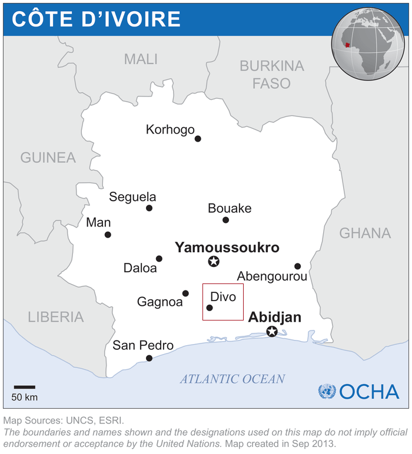

Proyecto en Divo, Costa de Marfil
En nuestra próxima misión, viajaremos a Divo, una ciudad ubicada al sur de Costa de Marfil, en la región de Lôh-Djiboua.

Este proyecto representa un paso más en nuestro compromiso con la infancia, llevando herramientas, valores y esperanza a comunidades que enfrentan grandes desafíos.
Durante nuestra estancia en Divo, realizaremos una serie de actividades diseñadas para fortalecer la autoestima, el aprendizaje y el bienestar emocional de los niños y niñas de la zona.
Actividades previstas:
- Talleres educativos y creativos: juegos didácticos, lectura en grupo, manualidades y actividades que estimulan el pensamiento, la imaginación y la colaboración.
- Dinámicas de desarrollo personal: espacios para que los niños reflexionen sobre sus sueños, se expresen libremente y fortalezcan su confianza y autoestima.
- Actividades deportivas y recreativas: juegos en equipo, fútbol, dinámicas de grupo que fomenten la alegría, el compañerismo y los hábitos saludables.
- Arte comunitario: pintura de murales y decoración de espacios compartidos con mensajes positivos creados por los propios niños.
Con cada acción, buscamos sembrar herramientas reales y emocionales que les permitan crecer con dignidad, conciencia y esperanza. En Divo, como en cada rincón al que llegamos, apostamos por una infancia que pueda imaginar y construir su futuro.